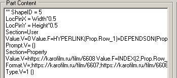
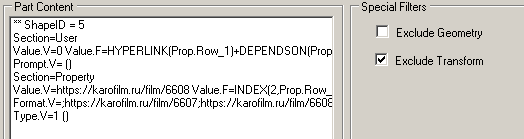

Пакетный формат файла появился в Visio, начиная с версии 2013, и остается основным действующим во всех последующих версиях. Документ Visio представляет собой архив, содержащий множество папок и XML файлов. В принципе, это обычный ZIP архив. То есть всегда можно разархивировать его и посмотреть любой отдельный файл. Причем, не только вручную, но и программно.
Это привело к тому, что документ Visio стал "прозрачным", то есть его можно рассматривать не только через шейп-лит или программно через объектную модель, но и в текстовом редакторе. Хочу остановиться на вопросе - как это может помочь при документировании разработки?
Вообще, документирование разработки - это очень непростой вопрос. Вот например, все привыкли, что разработка прибора всегда сопровождается разработкой схемы и технического описания. К программе тоже обязан прилагаться как минимум текст программы и чаще всего описание. А теперь вспомните - встречали ли вы когда-нибудь документацию на решение на основе Visio? Скорее всего - нет.
Хотя, программную часть документировать легче. Это можно сделать даже вручную, скопировав текст из VB Editor или Visual Studio. Можно применить автоматизацию. Известно приложение, экспортирующее все модули VBA проекта в структуру из папок и файлов. Даже самому приходилось делать программку, выдающую тексты VBA проекта в виде документа Word. Но вот за автоматизацию описания структуры шейпа вроде бы никто еще не брался. Почему? Да потому, что сложно.
Например, разработали вы шейп. Пусть это будет группа из десятка входящих шейпов, связанных зависимостями между собой и с внешними данными (через Shape Data). Вопрос - как описать эту конструкцию? Лазить по шейп-листам и копировать формулы? Можно, но довольно утомительно. Да и легко пропустить что-нибудь.
Однажды я пытался решить эту задачу в приложении VisioGraph. Макрос сканировал связи между ячейками и строил граф зависимостей. В принципе, подход рабочий, но решение было слишком ограниченным. Взаимодействие прослеживалось только в пределах одного шейп-листа, то есть группы не анализировались. Да и не все секции были доступны для анализа.
На основе XML вроде бы получается проще. Имеется небольшое приложение - Visio Package Helper, позволяющее открыть Visio документ и увидеть состав пакета (перечень XML файлов).
Можно выбрать любой из компонентов и просмотреть его содержимое в отдельном окне. Или перебросить текст через Clipboard в любой текстовый редактор (в целях документирования).
Это немного ускоряет работу по сравнению с ручным разархивированием, но идея в другом. С точки зрения документирования XML файлы содержат слишком много избыточной информации. Хотелось бы выбросить все ненужное и оставить только то, что отражает суть конструкции с точки зрения разработчика шейпа.
Первое, что приходит в голову - исключить все значения и оставить только ячейки с формулами. Ведь чаще всего именно они используются при разработке. Такой примитивный фильтр уже позволил сократить текст файла master1.xml до нескольких строк. Собственно, остались две самые важные для конструкции данного шейпа ячейки: Value в секции User и Value в секции Property.

Для еще большего сокращения вывода можно дополнительно исключить из рассмотрения секции Geometry и Transform. Отмечено, что эти секции часто поставляют совсем неинтересную, повторяющуюся от шейпа к шейпу информацию. В результате в этом конкретном примере остались зафиксированы как раз две наиболее важных формулы.

Но к сожалению, если следить только за наличием формул, то можно пропустить и важную информацию. Как в данном случае, когда фильтр выбросил было ячейку Prop.Row_1.Format, которая тоже важна для понимания конструкции, но содержит не формулу, а только значение и поэтому была отброшена. Поэтому алгоритм фильтрации пришлось усложнять, добавляя особую обработку для некоторых секций.
В первую очередь это сделано для секций User и Property. Добавлено протоколирование ячеек даже если они не содержат формул, но значение отличается от значения по умолчанию.
В итоге при включении всех фильтров вывод стал довольно компактным. Вот, например, как выводится страница с двумя шейпами. Второй из шейпов является группой с несколькими полями Shape Data и выводом их значений в тексте группы и одного из входящих шейпов.

Конечно, полностью автоматизировать очистку данных пока не удалось. Да наверное и никогда не удастся. Получается, инструмент такого типа должен использоваться в интерактивном режиме. Разработчик должен будет подбирать фильтры для каждого конкретного случая. Так, чтобы максимально исключить "мусорную" информацию и не пропустить ничего полезного. В крайнем случае, можно и вручную что-то добавить.
Надо отметить, что инструмент лучше применять к мастер-шейпам, находящимся в трафарете документа, то есть к файлам masterNNN.xml. Это связано с наследованием в Visio. Если попытаться рассмотреть копию мастер-шейпа, переброшенную на страницу рисунка, то мы просто не увидим те данные, которые унаследованы без изменения. К примеру, на странице рисунка шейп будет иметь две User строки, а его прототип в трафарете - десять User строк.
Подведем итог
1. Идея использовать XML представление в качестве источника данных для документирования вроде бы выглядит вполне работоспособной.
2. Visio Package Helper может быть полезным разработчику. Хотя и не как самодостаточный инструмент, а в дополнение к мозгам разработчика. А просмотр "сырых" XML он уж точно упрощает.
3. Думаю, по мере накопления опыта количество алгоритмов фильтрации будет расширяться.
Желающие попробовать утилитку в текущем состоянии могут скачать ее здесь -
https://drive.google.com/file/d/1vJwcHW__OZuDoNqFFk4gq9n3x6ZIjIW8/view?usp=sharing